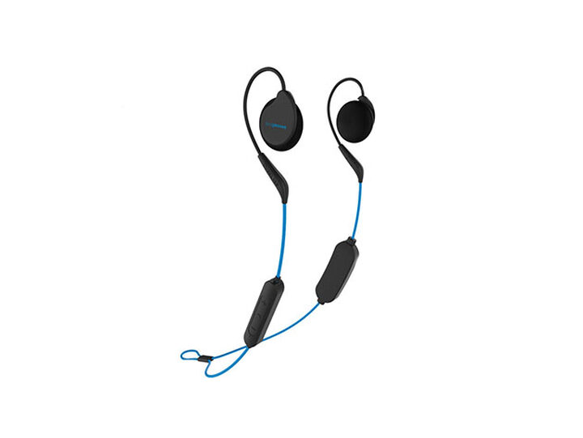
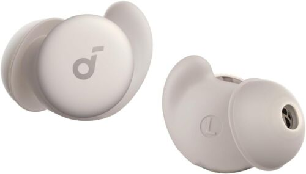

CASCOS
Para descansar
¿Para que sirven estos cascos y porque usarlos?
Los cascos diseñados para el descanso son auriculares especializados que ofrecen comodidad y relajación, ideales para escuchar música suave, meditar o reproducir sonidos relajantes mientras duermes. Están hechos con materiales suaves, ligeros y ergonómicos para no incomodar al acostarse. Algunos modelos incluyen funciones como cancelación de ruido o conexión inalámbrica, y otros están integrados en bandas para la cabeza o antifaces de sueño. Son perfectos para mejorar el descanso, reducir el estrés y aislarte de ruidos externos.

